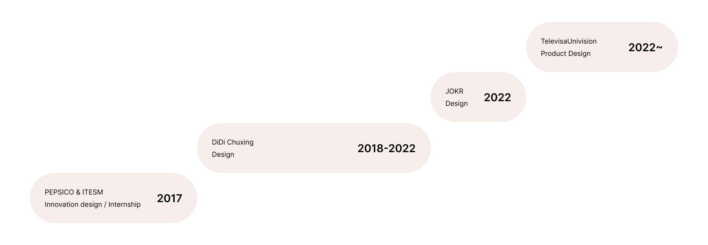

About

I’m a Product Designer working remotely from Guadalajara, Mexico. Over the past 6+ years, I’ve worked in Design teams; making research, creating & redesigning apps, launching products, and developing brands.
My Background
As an only child, I constantly created scenarios, objects, and moments to escape boredom in my solitude. Now, as an adult, I do the same for thousands of users who engage with my design products.
My passion for digital and physical experiences drives me, and one of my hobbies is museology, where I experiment with emotions and experiences beyond traditional boundaries.During my student years, I participated in numerous dance teams, where I learned to share moments of victory and defeat, but most importantly, how to build team relationships and be a good teammate.
In my free time, you’ll likely find me listening to podcasts, seeking visual inspiration with my Fujifilm X100F, making ice cream, or experimenting with a new Mediterranean recipe.
My Skills
Prototyping
Wireframes, high & low fidelity mockups on paper and Figma. Creating connections through component instances.
UX & Documentation
User Survey Analysis, Metrics, Sitemaps, User flows, Personas, Prototypes, A/B, Preference & User Testing
Collaboration with Dev Team
Work closely with the dev team to translate design concepts into functional features, ensuring a seamless user experience.
Product Design
Create web and app interfaces through design systems & libraries, bringing digital products to life for optimal user experiences.
Branding
Craft unique brand identities by blending visual elements and storytelling, ensuring a cohesive and memorable brand presence.